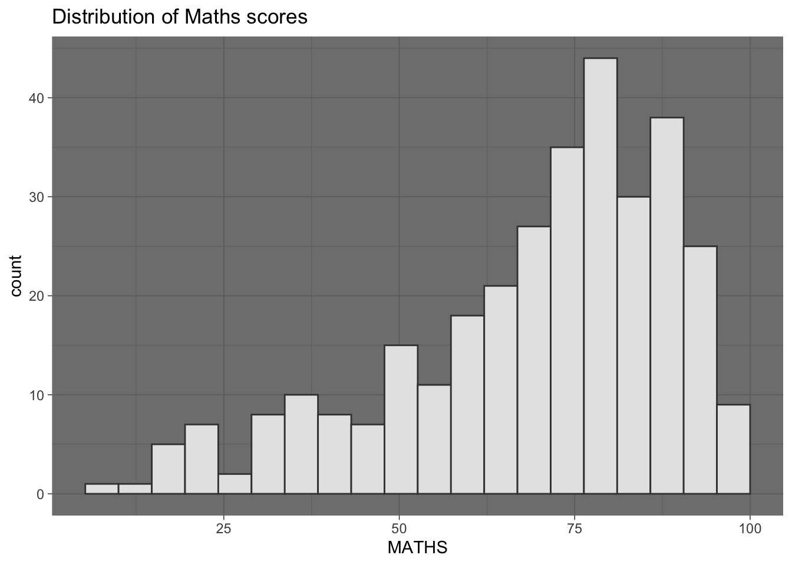
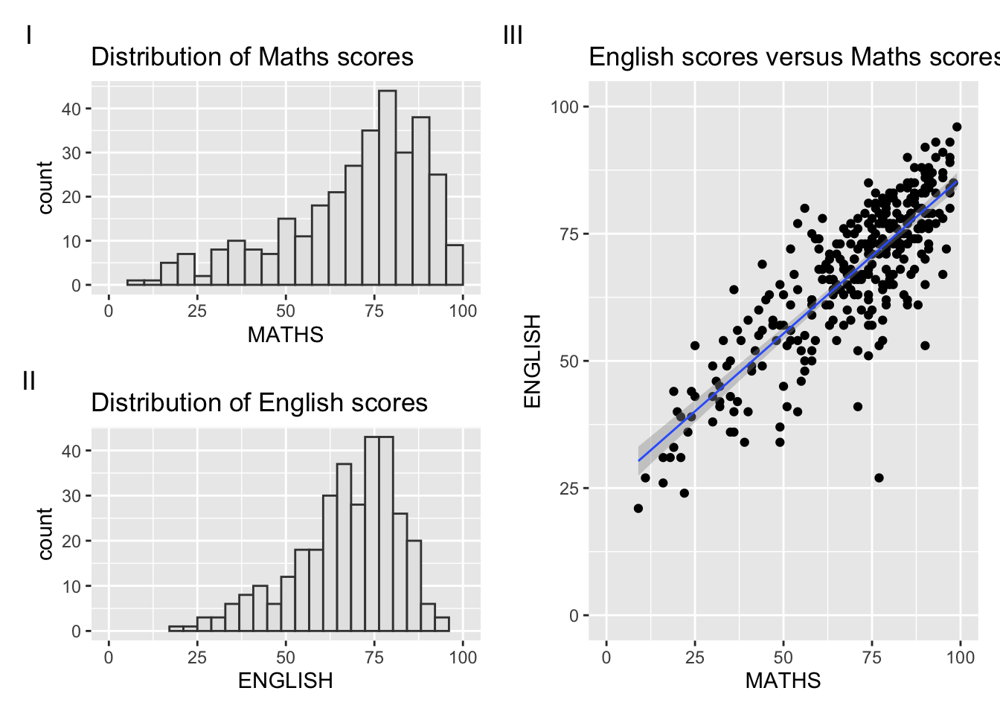

pacman::p_load(ggrepel, patchwork,
ggthemes, hrbrthemes,
tidyverse)Hands-on Exercise 2
Beyond ggplot2 Fundamentals
Importing the necessary libraries
ggrepel is an R package that offers geoms for ggplot2, enabling the repulsion of overlapping text labels
ggthemes is an R package that offers additional themes, geoms, and scales for ‘ggplot2’
hrbrthemes is an R package that offers typography-centric themes and theme components for ggplot2
patchwork is an R package designed for creating composite figures using ggplot2
Importing data
The exam_data tibble data frame comprises seven attributes in total.
4 categorical data type:
ID
CLASS
GENDER
RACE
3 continuous data type:
MATHS
ENGLISH
SCIENCE
exam_data <- read_csv("data/Exam_data.csv")Rows: 322 Columns: 7
── Column specification ────────────────────────────────────────────────────────
Delimiter: ","
chr (4): ID, CLASS, GENDER, RACE
dbl (3): ENGLISH, MATHS, SCIENCE
ℹ Use `spec()` to retrieve the full column specification for this data.
ℹ Specify the column types or set `show_col_types = FALSE` to quiet this message.ggrepel
Plotting statistical graphs can be challenging, particularly when dealing with a large number of data points and the need for effective annotation. ggrepel serves as an extension of the ggplot2 package, offering geoms designed to repel overlapping text, as demonstrated in the examples on the right. To implement this functionality, you can seamlessly replace geom_text() with geom_text_repel() and geom_label() with geom_label_repel.
Working with ggrepel
ggplot(data=exam_data,
aes(x= MATHS,
y=ENGLISH)) +
geom_point() +
geom_smooth(method=lm,
size=0.5) +
geom_label(aes(label = ID),
hjust = .5,
vjust = -.5) +
coord_cartesian(xlim=c(0,100),
ylim=c(0,100)) +
ggtitle("English scores versus Maths scores for Primary 3")Warning: Using `size` aesthetic for lines was deprecated in ggplot2 3.4.0.
ℹ Please use `linewidth` instead.`geom_smooth()` using formula = 'y ~ x'
Beyond ggplot2 Themes
ggplot2 includes a set of eight built-in themes, each providing a distinct visual style. These themes are:
theme_gray()
theme_bw()
theme_classic()
theme_dark()
theme_light()
theme_linedraw()
theme_minimal()
theme_void()
Click on this link for further information on ggplot2 [Themes].
ggplot(data=exam_data,
aes(x = MATHS)) +
geom_histogram(bins=20,
boundary = 100,
color="grey25",
fill="grey90") +
theme_dark() +
ggtitle("Distribution of Maths scores") 
Working with ggtheme package
ggthemes offers ‘ggplot2’ themes that emulate the visual style of plots created by Edward Tufte, Stephen Few, Fivethirtyeight, The Economist, ‘Stata’, ‘Excel’, The Wall Street Journal, and various others.
In the provided example, The Wall Street Journal theme is applied.
ggplot(data=exam_data,
aes(x = MATHS)) +
geom_histogram(bins=20,
boundary = 100,
color="grey25",
fill="grey90") +
ggtitle("Distribution of Maths scores") +
theme_wsj()
Additionally, ggthemes provides supplementary geoms and scales for ‘ggplot2’. To delve deeper into these features, refer to the accompanying vignette for more insights.
Working with hrbthems package
The hrbrthemes package offers a foundational theme that prioritises typographic elements, determining the placement of labels and specifying the fonts utilised.
ggplot(data=exam_data,
aes(x = MATHS)) +
geom_histogram(bins=20,
boundary = 100,
color="grey25",
fill="grey90") +
ggtitle("Distribution of Maths scores") +
theme_ipsum()The second objective revolves around enhancing productivity within a production workflow. Specifically, the elements of hrbrthemes are intended to be employed within the context of this “production workflow.” For more detailed information, refer to this [vignette]((https://cran.r-project.org/web/packages/hrbrthemes/vignettes/why_hrbrthemes.html).
ggplot(data=exam_data,
aes(x = MATHS)) +
geom_histogram(bins=20,
boundary = 100,
color="grey25",
fill="grey90") +
ggtitle("Distribution of Maths scores") +
theme_ipsum(axis_title_size = 18,
base_size = 15,
grid = "Y")
What can we learn from the code chunk above?
[
axis_title_size]argument is used to increase the font size of the axis title to 18[
base_size]argument is used to increase the default axis label to 15[
grid] argument is used to remove the x-axis grid lines
Beyond Single Graph
It is common to require multiple graphs to effectively convey a compelling visual narrative. Various ggplot2 extensions offer functions for composing figures with multiple graphs. In this section, we will discover how to generate a composite plot by combining three statistical graphics using the code chunk below:
Maths
p1 <- ggplot(data=exam_data,
aes(x = MATHS)) +
geom_histogram(bins=20,
boundary = 100,
color="grey25",
fill="grey90") +
coord_cartesian(xlim=c(0,100)) +
ggtitle("Distribution of Maths scores")English
p2 <- ggplot(data=exam_data,
aes(x = ENGLISH)) +
geom_histogram(bins=20,
boundary = 100,
color="grey25",
fill="grey90") +
coord_cartesian(xlim=c(0,100)) +
ggtitle("Distribution of English scores")Finally, we will generate a scatterplot illustrating the relationship between English scores and Maths scores, as demonstrated below.
English vs Maths
p3 <- ggplot(data=exam_data,
aes(x= MATHS,
y=ENGLISH)) +
geom_point() +
geom_smooth(method=lm,
size=0.5) +
coord_cartesian(xlim=c(0,100),
ylim=c(0,100)) +
ggtitle("English scores versus Maths scores for Primary 3")2.5.1 Creating Composite Graphics: pathwork methods
Various functions from ggplot2 extensions cater to the requirements of preparing composite figures by combining multiple graphs. Examples include grid.arrange() from the gridExtra package and plot_grid() from the cowplot package. There is a ggplot2 extension called patchwork, specifically designed for merging separate ggplot2 graphs into a unified figure.
The patchwork package features a straightforward syntax, allowing for the easy creation of layouts. The general syntax includes:
- A Two-Column Layout using the Plus Sign
+ - Parentheses
()to establish a subplot group - A Two-Row Layout using the Division Sign
/
This simplicity in syntax makes patchwork an efficient tool for combining ggplot2 graphs seamlessly.
2.5.2 Combining two ggplot2 graphs
The figure in the tabset below displays a composite of two histograms, seamlessly created using patchwork. Take note of the simplicity in the syntax employed to generate this plot!
p1 + p2
2.5.3 Combining three ggplot2 graphs
More intricate composite figures can be constructed by employing appropriate operators. In the composite figure below, the following operators are utilised:
- The
|operator is used to stack two ggplot2 graphs vertically - The
/operator is employed to position the plots next to each other horizontally - The
()operator is utilised to define the sequence of the plotting operations
(p1 / p2) | p3`geom_smooth()` using formula = 'y ~ x'
To delve deeper into this topic, please refer to the documentation on Plot Assembly.
2.5.4 Creating a composite figure with tag
To facilitate the identification of subplots in text, patchwork includes auto-tagging capabilities, as illustrated in the figure below.
((p1 / p2) | p3) +
plot_annotation(tag_levels = 'I')`geom_smooth()` using formula = 'y ~ x'2.5.5 Creating figure with insert
In addition to offering functions for arranging plots based on a specified layout, patchwork introduces the inset_element() function. This feature allows the flexible placement of one or multiple plots or graphic elements on top or below another plot.
p3 + inset_element(p2,
left = 0.02,
bottom = 0.7,
right = 0.5,
top = 1)`geom_smooth()` using formula = 'y ~ x'
2.5.6 Creating a composite figure by using patchwork and ggtheme
The figure below is generated by combining patchwork with the theme_wsj() from the ggthemes package, which was discussed earlier.
patchwork <- (p1 / p2) | p3
patchwork & theme_wsj()`geom_smooth()` using formula = 'y ~ x'